MA CUISINE CALEDONIENNNE
Ma recette du bougna marmite
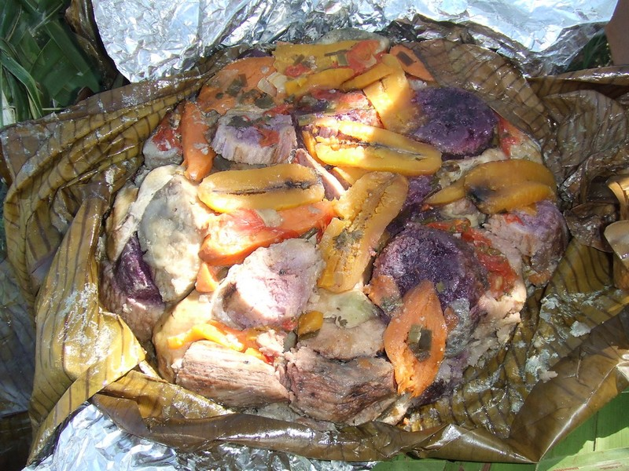
Ma recette du Bami calédonien
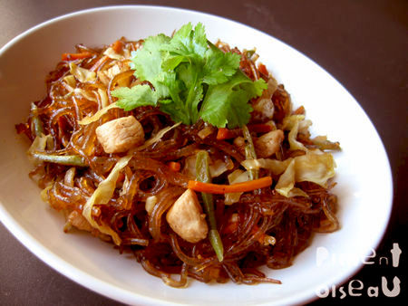
Ma recette de roussette au caramel du caillou
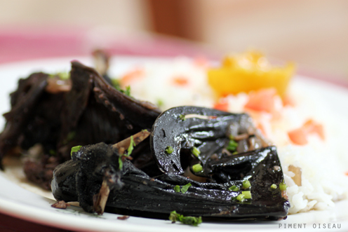
Crevette à l'ail et au lait de coco
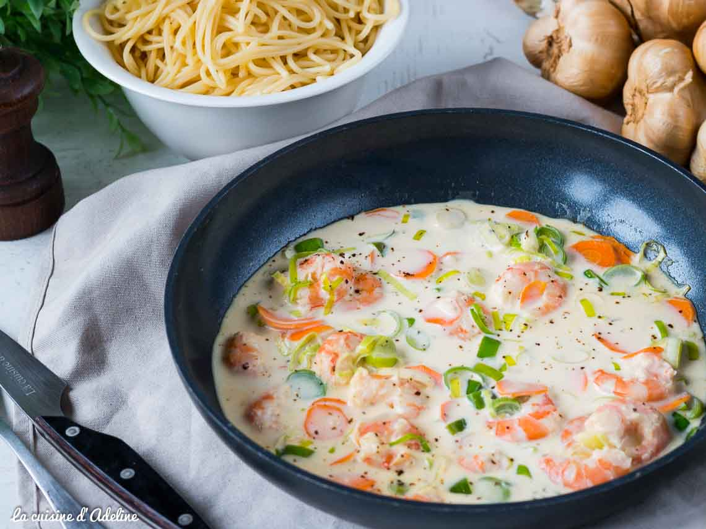
Ma recette d'escargot de kunie
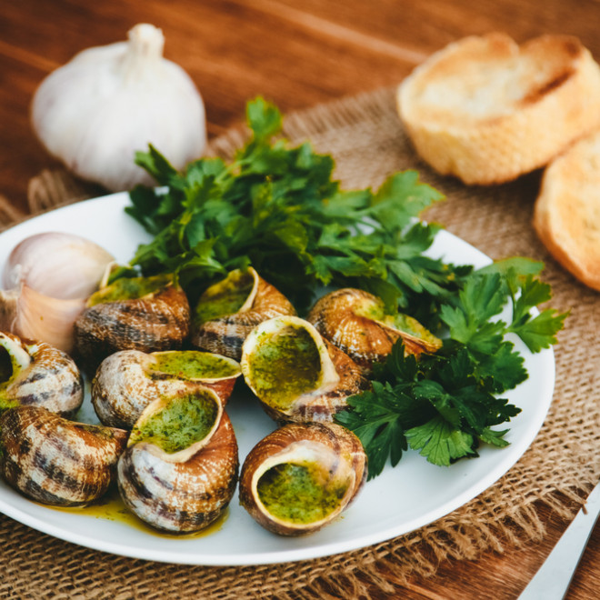
Ma recette de nem kanak
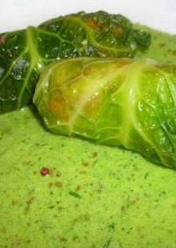
Ma recette de boulette javanaise
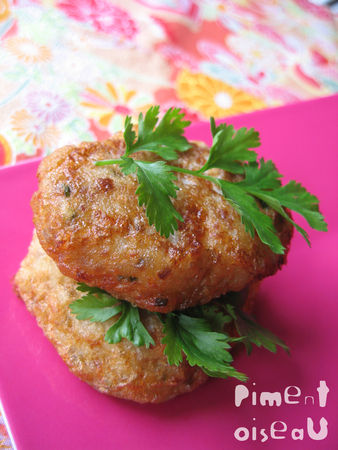
Ma recette de grisette du caillou
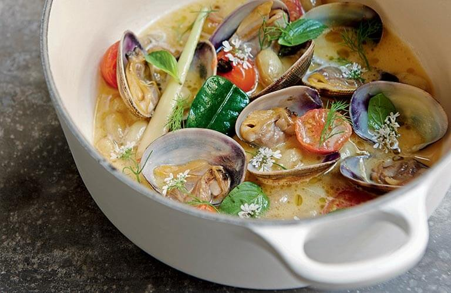
Ma recette de porc au sucre
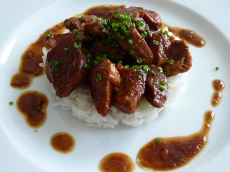
Ma recette de gratin au squash
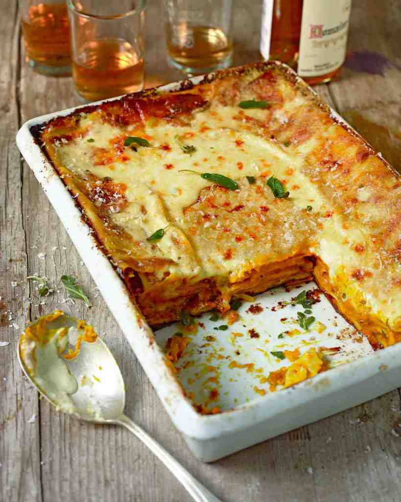
Ma recette de soupe au bénitier
Bred en salade et au lait de coco
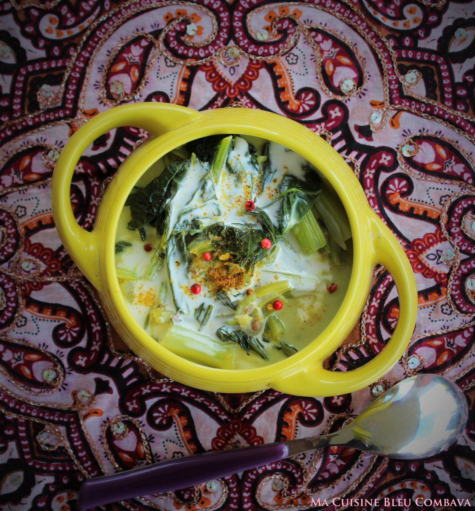